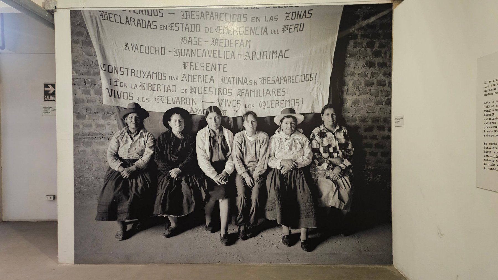
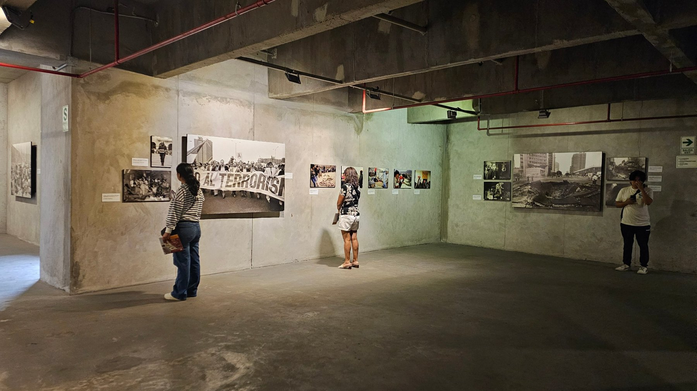
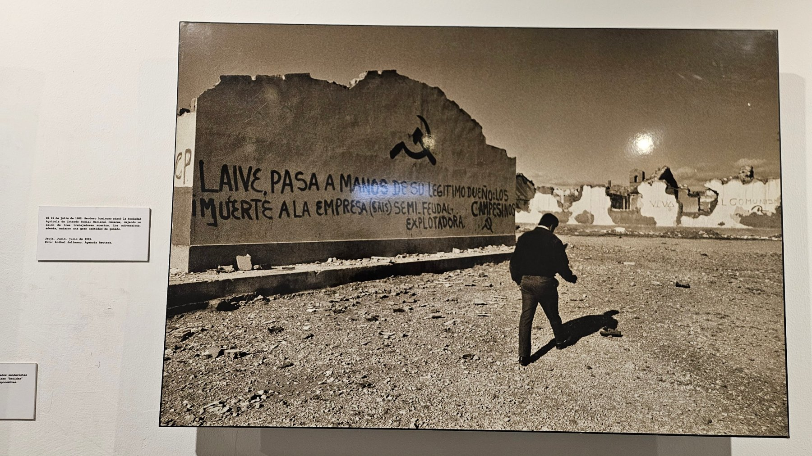
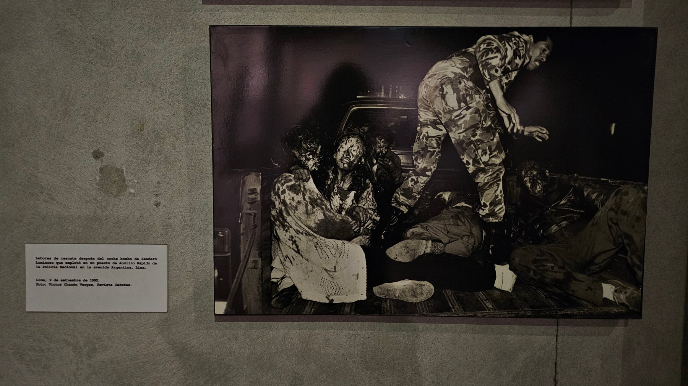
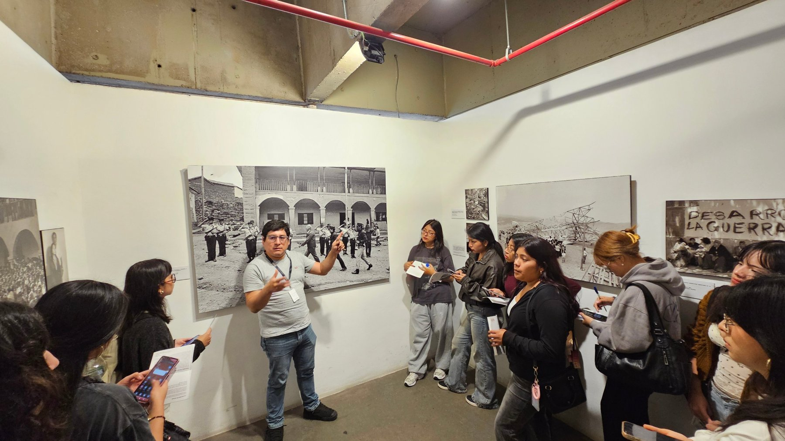
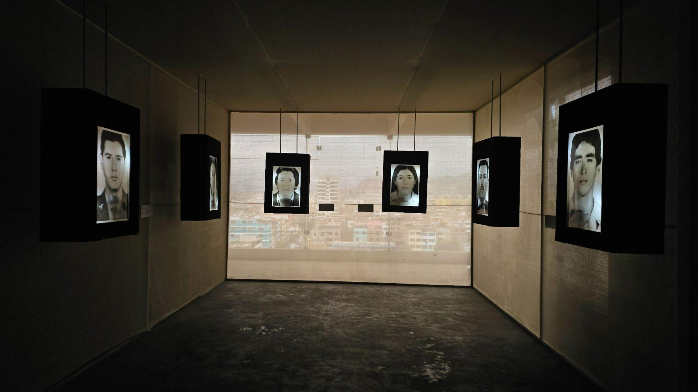
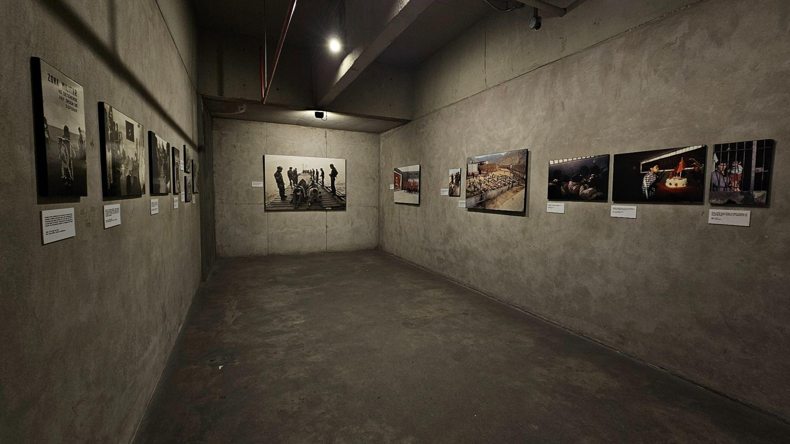
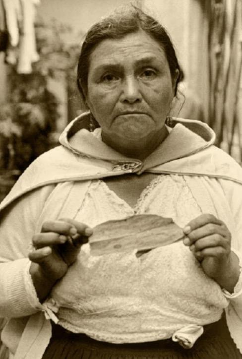

Portada
«Vivos los llevaron, vivos los queremos»: la búsqueda de las familias de desaparecidos
Detrás de cada fotografía existieron personas, historias y familias que vieron sus vidas transformadas por la violencia.
Por Nombre Apellido
Inspirado en la muestra Yuyanapaq, «para recordar»

Portada
Detrás de cada fotografía existieron personas, historias y familias que vieron sus vidas transformadas por la violencia.
Por Nombre Apellido
Opinión
Yuyanapaq nos permite conocer no solo los acontecimientos de aquella época, sino también las experiencias humanas que quedaron marcadas por el dolor, la pérdida y la resistencia.
Por Stacey Varona

Testimonio
Breve resumen de la nota.
Por Nombre Apellido

Sociedad
Breve resumen de la nota.
Por Nombre Apellido

Educación
Breve resumen de la nota.
Por Nombre Apellido

Cultura
Breve resumen de la nota.
Por Nombre Apellido
Entre 1980 y 2000, la historia de Perú fue marcada por la violencia que dejó profundas heridas. Este espacio es un homenaje a las víctimas, un archivo de los rostros y los momentos que la memoria colectiva se niega a olvidar.
Recordar no es vivir en el pasado, sino entenderlo para transformar el presente.
Opinión
Por Stacey VaronaLunes 3 de noviembre de 2026
La fotografía tiene la capacidad de comunicar historias, despertar emociones y acercarnos a realidades que muchas veces desconocemos. Esto se evidencia en Yuyanapaq, una exposición fotográfica que recoge testimonios visuales del periodo de violencia que vivió el Perú entre 1980 y 2000. A través de sus imágenes, la exposición nos permite conocer no solo los acontecimientos de aquella época, sino también las experiencias humanas que quedaron marcadas por el dolor, la pérdida y la resistencia. De esta manera, cada fotografía se convierte en una forma de preservar la memoria y transmitirla a quienes no vivieron aquellos años.

Durante el recorrido por Yuyanapaq, resulta llamativa la manera en que las fotografías utilizan distintos recursos visuales para transmitir sus mensajes. Los encuadres cerrados, centrados en los rostros, las miradas y las manos de las personas, permiten apreciar sus expresiones y concentrar la atención en sus emociones. Por otro lado, los planos abiertos muestran escenarios de destrucción, abandono y desplazamiento, permitiendo comprender la magnitud de lo ocurrido.
Asimismo, la perspectiva influye en la conexión que se establece con las imágenes. Las fotografías tomadas de frente o a la altura de los ojos generan una sensación de cercanía con los protagonistas, como si el espectador estuviera compartiendo ese momento con ellos. A esto se suma el uso del blanco y negro en gran parte de la muestra, que resalta los contrastes, las expresiones y los detalles de cada escena, reforzando la intensidad visual de los acontecimientos representados.
Estas imágenes transmiten angustia, tristeza, incertidumbre, pero también dignidad y resistencia.
Una de las principales fortalezas de las fotografías de Yuyanapaq es su capacidad para transmitir emociones sin necesidad de explicaciones extensas. Una mirada de tristeza, un rostro cansado, el dolor de una familia o el caos de una escena pueden comunicar sentimientos difíciles de expresar únicamente con palabras.
Estas imágenes transmiten angustia, tristeza, incertidumbre, pero también dignidad y resistencia. Su fuerza está en permitir que el espectador interprete lo que observa y establezca una conexión emocional con las personas retratadas. Así, la fotografía deja de ser únicamente un registro de un acontecimiento y se convierte en un medio que acerca al público a las experiencias humanas que forman parte de nuestra historia.
Para nosotros, las nuevas generaciones que no vivimos esa etapa de cerca, ver esta exposición fotográfica es clave. Nos permite entender de una manera más humana y visual lo que pasó en el Perú, recordándonos que la memoria histórica no es solo un tema de libros, sino algo que debemos tener presente para cuidar nuestros derechos y evitar que se repita.
◆

Historia
El 19 de julio de 1989, Sendero Luminoso atacó la Sociedad Agrícola de Interés Social (SAIS) Mariscal Cáceres, en Jauja, Junín. El ataque dejó un saldo de tres trabajadores muertos y, además, los subversivos mataron una gran cantidad de ganado.
La fotografía fue tomada en julio de 1989 por Aníbal Solimano, de la Agencia Reuters, y forma parte de la muestra Yuyanapaq.
Un hombre camina solo sobre un terreno cubierto de escombros. Frente a él se levanta un muro roto, cubierto de consignas pintadas contra la empresa agrícola. Más atrás, los restos de otras paredes dibujan un paisaje devastado bajo un sol blanco.
El muro ocupa casi todo el encuadre y las pintas con el símbolo de la hoz y el martillo se leen como un mensaje dirigido al espectador. El hombre, pequeño y de espaldas, da escala a la destrucción. El tono sepia y el sol sobre el horizonte refuerzan la sensación de abandono.

Historia
Labores de rescate después del coche bomba de Sendero Luminoso que explotó en un puesto de Auxilio Rápido de la Policía Nacional en la avenida Argentina, Lima, el 9 de setiembre de 1992.
Foto: Víctor Chacón Vargas, Revista Caretas. La imagen muestra heridos y víctimas; por eso aparece difuminada hasta que el lector decide verla.
Escribe aquí la crónica de esta fotografía.
Escribe aquí el análisis de la imagen: plano, luz, composición y emociones.

Historia
Escribe aquí la nota informativa: qué muestra la fotografía, cuándo y dónde se tomó, y el contexto histórico en el que ocurrió.
Escribe aquí la nota informativa: qué muestra la fotografía, cuándo y dónde se tomó, y el contexto histórico en el que ocurrió.
Escribe aquí la crónica periodística: narra la escena con detalle, desde la mirada de quien observa la imagen.
Escribe aquí la crónica periodística: narra la escena con detalle, desde la mirada de quien observa la imagen.
Escribe aquí el análisis de la imagen: plano, encuadre, luz, color o blanco y negro, y qué emociones transmite.
Escribe aquí el análisis de la imagen: plano, encuadre, luz, color o blanco y negro, y qué emociones transmite.

Cargo o relación con la memoria
“Una frase destacada de la entrevista, entre comillas.”Leer entrevista completa

Cargo o relación con la memoria
“Una frase destacada de la entrevista, entre comillas.”Leer entrevista completa

Cargo o relación con la memoria
“Una frase destacada de la entrevista, entre comillas.”Leer entrevista completa

Directora

Cargo

Cargo

Cargo

Cargo

Cargo
Escribe aquí una reflexión breve sobre lo que aprendió el equipo al visitar la muestra Yuyanapaq.






“Recordar nuestro pasado no es vivir en él, sino aprender de él.”